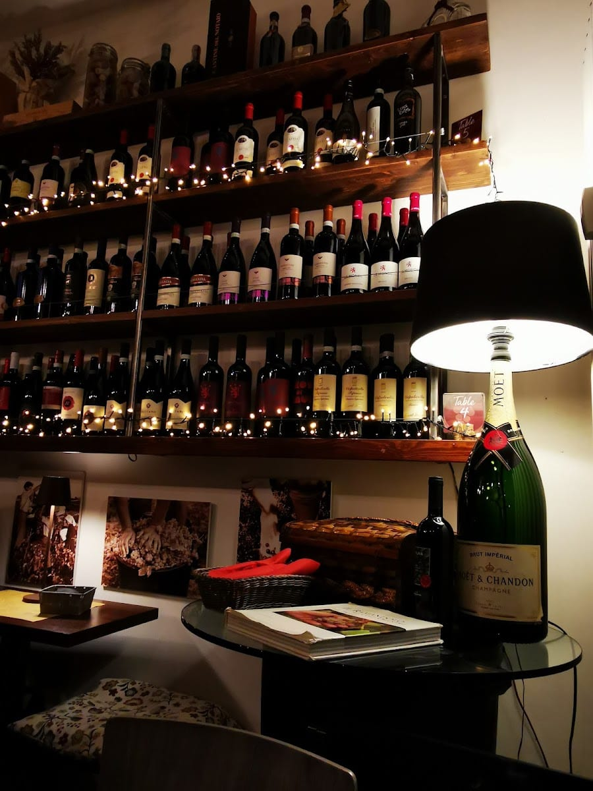
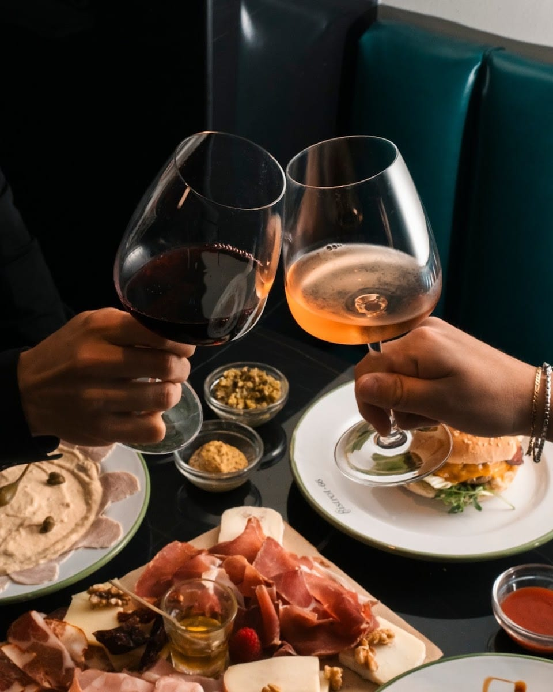
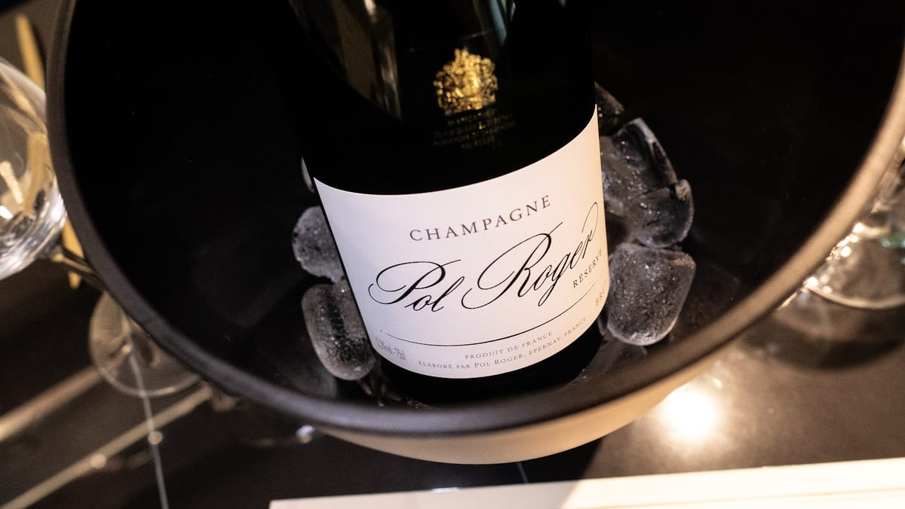
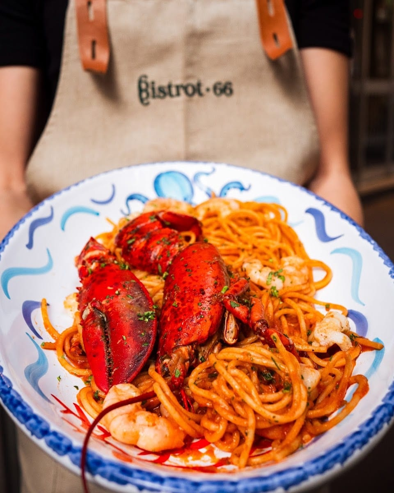
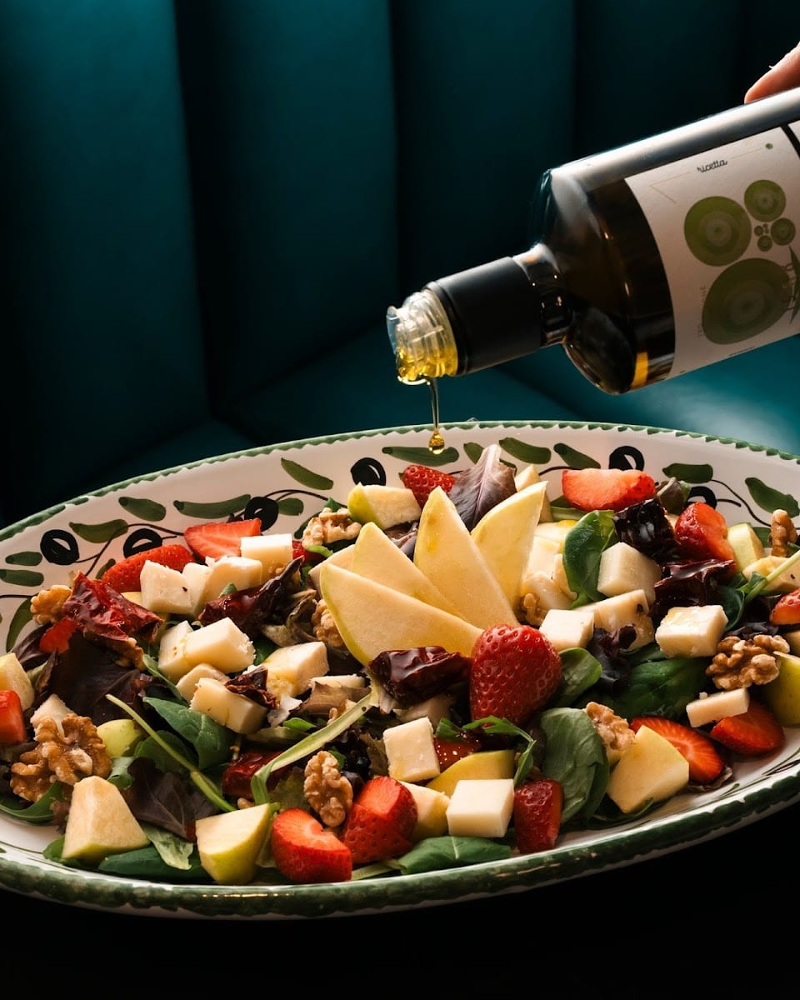
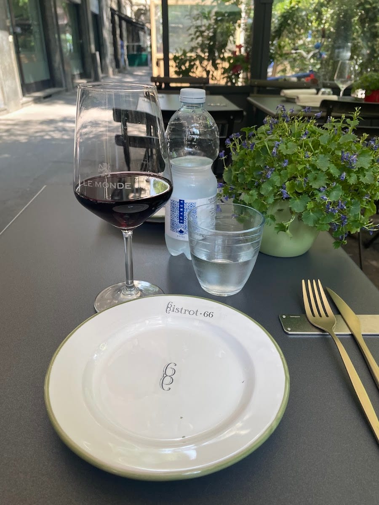
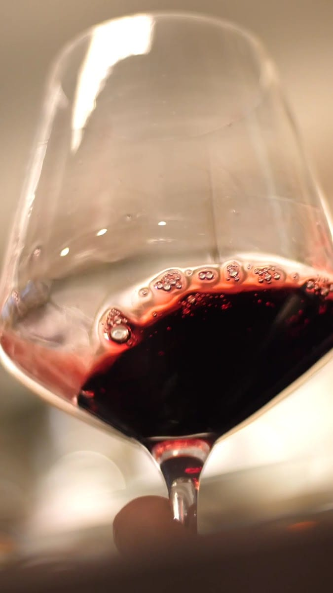
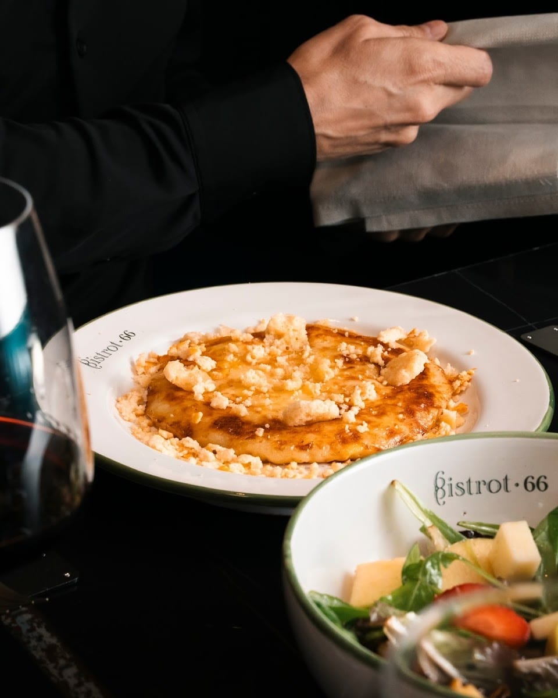
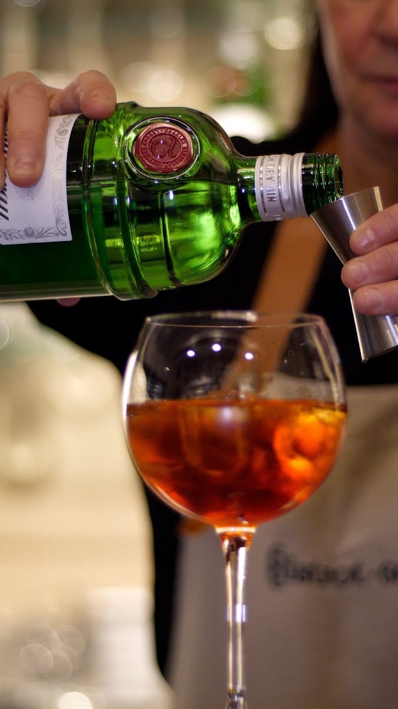
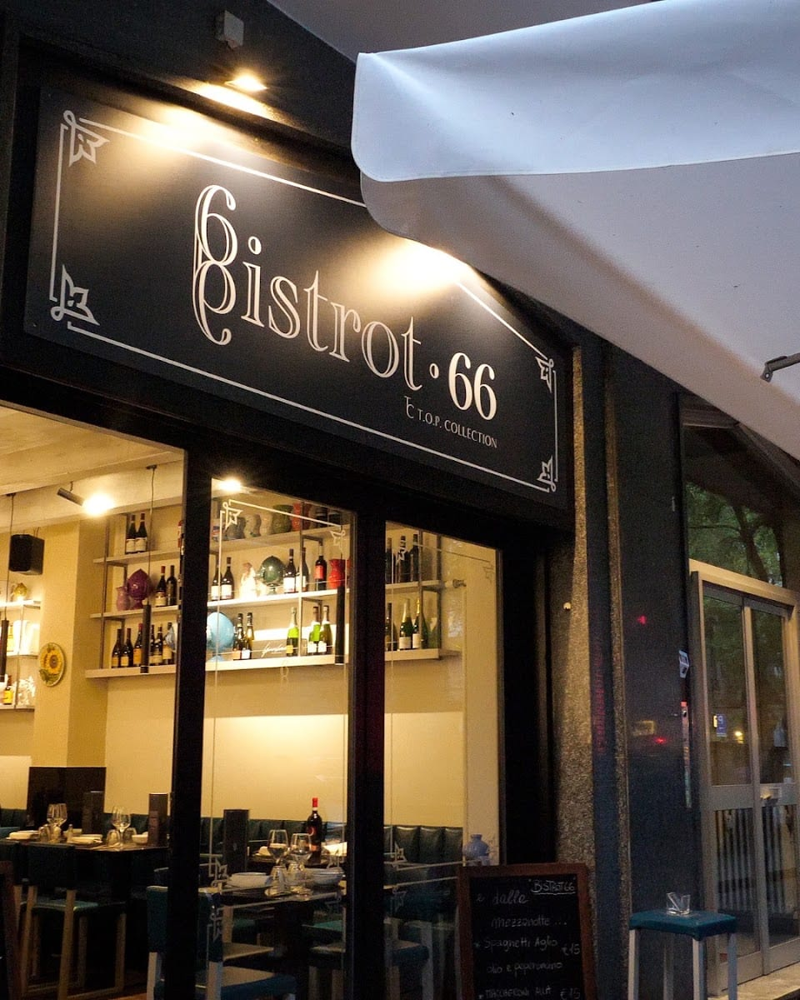

Sempione · Via Procaccini 66 · oggi Bistrot66
enoteca con degustazione · da Udine a Potenza
Un'enoteca nata dalla passione di tre donne, una dal Friuli e due dalla Basilicata. Una linea immaginaria da Udine a Potenza: vini, taglieri e prodotti artigianali delle due terre, da bere al calice e da assaggiare con calma.


La storia
Un'Ottima Annata nasce dall'idea di tre donne — Giusy, Serena e Donatella — una friulana e due lucane, che alla crisi hanno risposto con l'amore per il vino, aprendo una piccola oasi di buon bere e buon cibo.
Il filo è una linea immaginaria da Udine a Potenza: prodotti artigianali che uniscono Friuli e Basilicata, per viaggiare tra due terre lontane in un solo bicchiere. Il nome? Come il film — A Good Year, tra le vigne.
Oggi il locale porta anche l'insegna Bistrot66, ma l'anima dell'enoteca è la stessa.
Le due terre
Da un capo all'altro d'Italia, il meglio di due tradizioni. Nel piatto e nel calice.
E in cucina, i piatti d'autore: dallo spaghetto all'astice al risotto al Merlot e taleggio.

Al calice
Una selezione di vini al calice che cambia spesso, dalle bollicine ai grandi rossi. Da accompagnare con un tagliere, o da scoprire in degustazione, guidati da chi il vino lo ama davvero.
Un locale piccolo e curato, dove fermarsi dopo il lavoro per un aperitivo che diventa cena, senza fretta.
A tavola






Le voci
Se cerchi un posto dove mangiare davvero bene in una posizione eccellente, è una scelta che non delude. Il locale è intimo e accogliente, perfetto per un'esperienza rilassata ma curata nei dettagli.
Silvia Maggioni · ★★★★★
Location accogliente, cibo delizioso con proposte che spaziano dalla cucina italiana a quella internazionale. Un piccolo indirizzo da tenere stretto.
Matteo Muscella · ★★★★★
Il locale, piccino ma molto curato, è giusto vicino all'ufficio: ogni giorno vedo il menù di extra sulla vetrina. Il menù sulla lavagnetta è assolutamente invitante.
Carla Colledan · ★★★★★
Enoteca con vini pregiati, cibi e taglieri ottimi. Tornerò di sicuro con le mie amiche.
Recensione Google · ★★★★★
Da non perdere l'ospitalità e l'accoglienza di Giusi e Donatella: ti fanno sentire a casa.
Recensione Google · ★★★★★
Dove siamo

FAQ
In Via Giulio Cesare Procaccini 66, in zona Sempione a Milano. Oggi il locale porta anche l'insegna Bistrot66.
È l'idea con cui è nata l'enoteca: le fondatrici vengono dal Friuli e dalla Basilicata, e uniscono le due terre con vini e prodotti artigianali che vanno da Udine a Potenza — dal frico friulano ai salumi e formaggi lucani.
Sì: vini al calice in degustazione, oltre a taglieri e a una cucina d'autore che spazia dai piatti del territorio ai grandi classici.
Da martedì a sabato a pranzo (12–15) e tutte le sere dalle 18 a tarda notte; lunedì solo la sera. Domenica chiuso.